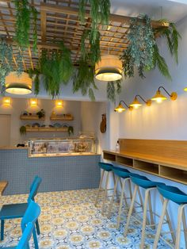
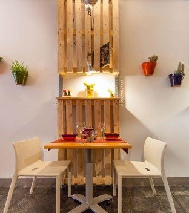
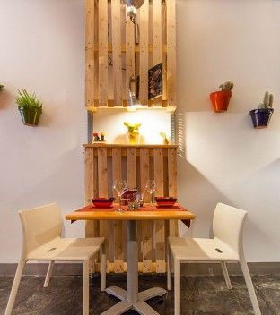

En El Rincón de los Sabores, nuestra misión es deleitar a nuestros clientes con una experiencia gastronómica excepcional, ofreciendo platillos que resaltan los sabores auténticos de la cocina, elaborados con ingredientes frescos y de la más alta calidad. Nos esforzamos por crear un ambiente cálido y acogedor donde cada visita sea una celebración de la buena comida y la buena compañía.
Aspiramos a convertirnos en el restaurante reconocido por su excelencia culinaria, su servicio impecable y su ambiente único. Queremos ser un lugar donde los amantes de la buena comida encuentren un refugio para los sentidos, donde cada platillo cuente una historia y cada visita deje una huella memorable. Buscamos expandir nuestra presencia y llevar nuestra pasión por la cocina a nuevos horizontes, siempre manteniendo nuestra esencia y compromiso con la calidad
 
